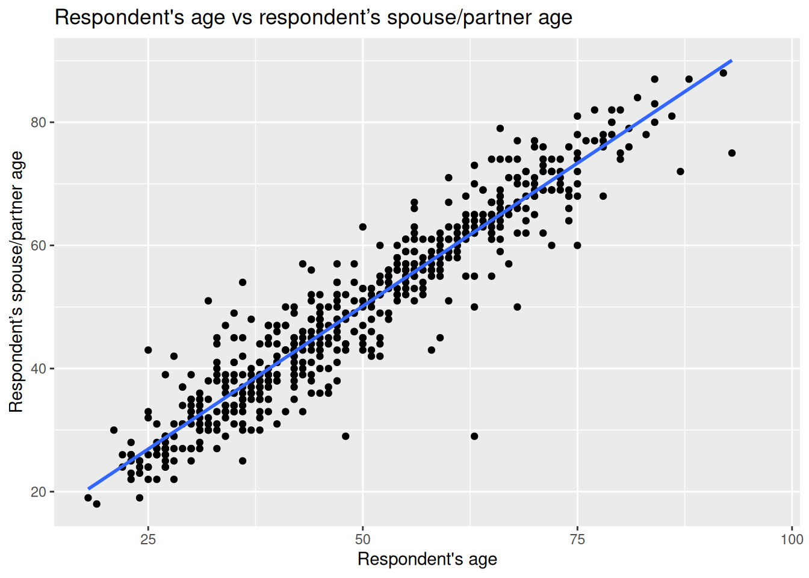

Lab 7 Correlation
7.1 What is correlation?
When conducting empirical research, we are often interested in associations between two variables, for example, personal income and attitudes towards migrants. In this lab we will focus on visualizing relationship between variables and how to measure it. In quantitative research, the main variable of interest in an analysis is called the dependent or response variable, and the second is known as the independent or explanatory. In the example above, we can think of personal income as the independent variable and attitudes as the dependent.
The relationship between variables can be positive, negative or non-existent. The figure below shows these type of relationships to different extents. The association is positive when one of the variables increases and the second variable tends to go in the same direction (that is increasing as well). The first plot on the left-hand side shows a strong positive relationship. As you can see, the points are closely clustered around the straight line. The next plot also shows a positive relationship. This time the relationship is moderate. Therefore, the points are more dispersed in relation to the line compared to the previous one.
Figure 7.1: Types of correlation.
The plot in the middle, shows two variables that are not correlated. The location of the points is not following any pattern and the line is flat. By contrast, the last two plots on the right hand-side show a negative relationship. When the values on the X axis increase, the values on the Y axis tend to decrease.
7.1.1 Data and R environment
We will continue working on the same R Studio Cloud project as in the previous session and using the 2012 Northern Ireland Life and Times Survey (NILT) data. To set the R environment please follow the next steps:
- Please go to your ‘Quants lab group’ in RStudio Cloud (log in if necessary);
- Open your own copy of the ‘NILT’ project from the ‘Quants lab group’;
- Create a new Rmd file, type ‘Correlation analysis’ in ‘Tile’ section and your name in the ‘Author’ box. Leave the ‘Default Output Format’ as
HTML. - Save the Rmd document under the name ‘Lab7_correlation’.
- Delete all the contents in the Rmd default example with the exception of the first bit which contains the YAML and the first chunk, which contains the default chunk options (that is all from line 12 and on).
- In the setup chunk, change
echofromTRUEtoFALSEin line 9 (this will hide the code for all chunks in your final document). - Within the first chunk, copy and paste the following code below line 9
knitr::opts_chunk$set(message = FALSE, warning = FALSE). This will hide the warnings and messages when you load the packages.
In the Rmd document insert a new a chunk, copy and paste the following code. Then, run the individual chunk by clicking on the green arrow on the top-right of the chunk.
## Load the packages
library(tidyverse)
# Load the data from the .rds file we created in lab 3
nilt <- readRDS("data/nilt_r_object.rds")This time we will use new variables from the survey. Therefore, we need to coerce them into their appropriate type first. Insert a second chunk, copy and paste the code below. Then, run the individual chunk.
# Age of respondent’s spouse/partner
nilt$spage <- as.numeric(nilt$spage)
# Migration
nilt <- mutate_at(nilt, vars(mil10yrs, miecono, micultur), as.numeric)Also, we will create a new variable called mig_per by summing the respondent’s opinion in relation to migration using the following variables: mil10yrs, miecono and micultur (see the documentation p. 14 here to know more about these variables). Again, insert a new chunk, copy and paste the code below, and run the individual chunk.
7.1.2 Visualizing correlation
Visualizing two or more variables can help to uncover or understand the relationship between these variables. As briefly introduced in the previous session, different types of plots are appropriate for different types of variables. Therefore, we split the following sections according to the type of data to be analysed.
You do not need to run or reproduce the examples shown in the following sections in your R session with the exception of exercises that are under the activity headers.
7.1.2.1 Numeric vs numeric
To illustrate this type of correlation, let’s start with a relatively obvious but useful example. Suppose we are interested in how people choose their spouse or partner. The first characteristic that we might look at is age. We might suspect that there is a correlation between the the nilt respondents’ won age and their partner’s age. Since both ages are numeric variables, a scatter plot is appropriate to visualize the correlation. To do this, let’s use the functions ggplot() and geom_point(). In aesthetics aes() let’s define the respondent’s age rage in the X axis and the respondent’s spouse/partner age spage in the Y axis. As a general convention in quantitative research, the response/dependent variable is visualized on the Y axis and the independent on the X axis (you do not need to copy and reproduce the example below).
ggplot(nilt, aes(x = rage, y = spage)) +
geom_point() +
geom_smooth(method = "lm", se = FALSE) +
labs(title = "Respondent's age vs respondent’s spouse/partner age",
x = "Respondent's age", y = "Respondent’s spouse/partner age" )
Note that in this plot the function geom_smooth() was used. This is to plot a straight line which describes the best all the points in the graph.
From the plot above, we see that there is a strong positive correlation between the respondent’s age and their partner’s age. We see that for some individuals their partner’s age is older, whereas others is younger. Also, there are some dots that are far away from the straight line. For example, in one case the respondent is around 60 years old and the age of their partner is around 30 years old (can you find that dot on the plot?). These extreme values are known as outliers.
We may also suspect that the respondents’ sex is playing a role in this relationship. We can include this as a third variable in the plot by colouring the dots by the respondents’ sex. To do this, let’s specify the colour argument in aesthetics aes() with a categorical variable rsex.
ggplot(nilt, aes(x = rage, y = spage, colour = rsex)) +
geom_point() +
geom_abline(slope = 1, intercept = 0, colour = "gray20") +
labs(title = "Respondent's age vs respondent’s spouse/partner age",
x = "Respondent's age", y = "Respondent’s spouse/partner age" ) In the previous plot, we included a line which describes what it would look like if the partner’s age were exactly the same as the respondent’s age. We observe a clear pattern in which female participants are on one side of the line and males on the other. As we can see, most female respondents tend to choose/have partners who are older, whereas males younger ones.
In the previous plot, we included a line which describes what it would look like if the partner’s age were exactly the same as the respondent’s age. We observe a clear pattern in which female participants are on one side of the line and males on the other. As we can see, most female respondents tend to choose/have partners who are older, whereas males younger ones.
7.1.3 Activity 1
In the Lab7_correlation file, use the nilt data object to visualize the relationship of the following variables by creating a new chunk. Run the chunk individually and comment on what you observe from the result as text (outside the code chunks).
- Create a scatter plot to visualize the correlation between the respondent’s overall opinion in relation to migration
mig_perand the respondent’s agerage. Remember that we just created themig_pervariable by summing three variables which were in a 0-10 scale (the higher the value, the better the person’s perception is). Inaes(), specifyrageon the X axis andmig_peron the Y axis. Useggplot()function andgeom_point(). Also, include a straight line describing the points using thegeom_smooth()function. Within this function set themethodargument to'lm'. - What type of relationship do you observe? Comment as text in the Rmd the overall result of the plot and whether this is in line with your previous expectation.
7.1.3.1 Numeric vs categorical
As briefly introduced in the last lab, correlations often occur between categorical and numeric data. A good way to observe the relationship between these type of variables is using a box plot. Which essentially shows the distribution of the numeric values by category/group.
Let’s say we are interested in the relationship between education level and perception of migration. The variable highqual contains the respondent’s highest education qualification. Using ggplot(), we can situate mig_per on the X axis and highqual on the Y axis, and plot it with the gem_boxplot() function. Note that before passing the dataset to ggplot, we can filter out two categories of the variable highqual where education level is unknown (i.e. “Other, level unknown” or “Unclassified”).
nilt %>%
filter(highqual != "Other, level unknown" & highqual != "Unclassified") %>%
ggplot(aes(x = mig_per, y = highqual )) +
geom_boxplot() From the plot above, we see that respondents with higher education level (on the bottom) appear to have more positive opinion on migration when compared to respondents with lower education level or no qualifications (on the top). Overall, the data shows a pattern that the lower one’s education level is, the worse their opinion towards migration is likely to be. Since education level is an ordinal variable, we can say this is a positive relationship.
From the plot above, we see that respondents with higher education level (on the bottom) appear to have more positive opinion on migration when compared to respondents with lower education level or no qualifications (on the top). Overall, the data shows a pattern that the lower one’s education level is, the worse their opinion towards migration is likely to be. Since education level is an ordinal variable, we can say this is a positive relationship.
7.1.4 Activity 2
Using the nilt data object, visualize the relationship of the following variables by creating a new chunk. Run the chunk individually and comment on what you can observe from the results as text in the Rmd file to introduce the plot.
- Create a boxplot to visualize the correlation between the respondent’s overall opinion in relation to migration
mig_perand the political party which the respondent identify withuninatid. Useggplot()in combination withgeom_boxplot(). Make sure to specifymig_peron the Y axis anduninatidon the X axis inaes(). - Do you think the opinion towards migration differs among the groups in the plot? Comment on the overall results in the Rmd document.
7.2 Measuring correlation
So far we have examined correlation by visualizing variables only. A useful practice in quantitative research is to actually measure the magnitude of the relationship between these variables. One common measure is the Pearson correlation coefficient. This measure results in a number that goes from -1 to 1. A coefficient below 0 implies a negative correlation whereas a coefficient over 0 a positive one. When the coefficient is close to positive one (1) or negative one (-1), it implies that the relationship is strong. By contrast, coefficients close to 0 indicate a weak relationship. This technique is appropriate to measure linear numeric relationships, which is when we have numeric variables with a normal distribution, e.g. age in our dataset.
Let’s start measuring the relationship between the respondent’s age and their partner’s age. To do this in R, we should use the cor() function. In the R syntax, first we specify the variables separated by a comma. We need to be explicit by specifying the object name, the dollar sign, and the name of the variable, as shown below. Also, I set the use argument as 'pairwise.complete.obs'. This is because one or both of the variables contain more than one missing value. Therefore, we are telling R to use complete observations only.
## [1] 0.9481297The correlation coefficient between this variables is 0.95. This is close to positive 1. Therefore, it is a strong positive correlation. The result is completely in line with the plot above, since we saw how the dots were close to the straight line.
What about the relationship between age and mig_per that you plotted earlier?
## [1] -0.05680918The coefficient is very close to 0, which means that the correlation is practically non-existent. The absence of correlation is also interesting in research. For instance, one might expect that younger people would be more open to migration. However, it seems that age does not play a role on people’s opinion about migration in NI according to this data.
Let’s say that we are interested in the correlation between mig_per and all other numeric variables in the dataset. Instead of continuing computing the correlation one by one, we can run a correlation matrix. The code syntax can be read as follows: from the nilt data select these variables, then compute the correlation coefficient using complete cases, and then round the result to 3 decimals.
nilt %>%
select(mig_per, rage, spage, rhourswk, persinc2) %>%
cor(use = 'pairwise.complete.obs') %>%
round(3)## mig_per rage spage rhourswk persinc2
## mig_per 1.000 -0.057 -0.132 0.082 0.228
## rage -0.057 1.000 0.948 -0.013 -0.036
## spage -0.132 0.948 1.000 -0.182 -0.090
## rhourswk 0.082 -0.013 -0.182 1.000 0.383
## persinc2 0.228 -0.036 -0.090 0.383 1.000From the result above, we have a correlation matrix that computes the Person correlation coefficient for the selected variables. In the first row we have migration perception. You will notice that the first value is 1.00, this is because it is measuring the correlation against the same variable (i.e. itself). The next value in the first row is age, which is nearly 0. The next variables also result in low coefficients, with the exception of the personal income, where we see a moderate/low positive correlation. This can be interpreted that respondents with high income are associated with more positive opinion towards migration compared to low-income respondents.
7.2.1 Activity 3
- Insert a new chunk in your Rmd file;
- Using the
niltdata object, compute a correlation matrix using the following variables:rage,persinc2,mil10yrs,mieconoandmicultur, setting theuseargument to'pairwise.complete.obs'and rounding the result to 3 decimals; - Run the chunk individually and comment whether personal income or age is correlated with the perception of migrants in relation to the specific aspects asked in the variables measured (consult the documentation in p. 14 to get a description of these variables);
- Knit the
Lab7_correlationRmd document to.htmlor.pdf. The output document will automatically be saved in your project. - Discuss your previous results with your neighbour or tutor.